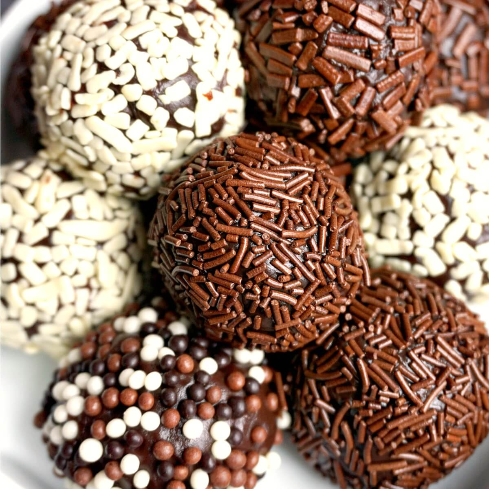

Brigadeiro

Traditional Brazilian Chocolate Brigadeiro Recipe, the no-bake bite-size sweets with only 4 ingredients. Call them truffles, fudge balls or just brigadeiros, they are sure to make you fall in love with them. So rich, dense and chocolatey, perfect for every celebration!
Ingredients
- Condensed milk: Use sweetened condensed milk for best results.
- Butter: Salted or unsalted.
- Cocoa powder: A good quality one makes all the difference.
- Sprinkles: Any kind, or just omit.
Steps:
- Add the condensed milk, butter, and sifted cocoa powder in a pan set over a low heat.
- Mix well with a spatula to get a smooth paste.
- Continue to stir until it thickens, which might take up to 15 minutes or so.
- You know the paste is cooked well when it coats the back of the spatula and you can see the bottom of the pan for at least 3-4 seconds when you drag the spatula through it.
- Remove it from the heat, and leave to cool completely.
- You can then shape it into balls, then coat with sprinkles or desiccated coconut.